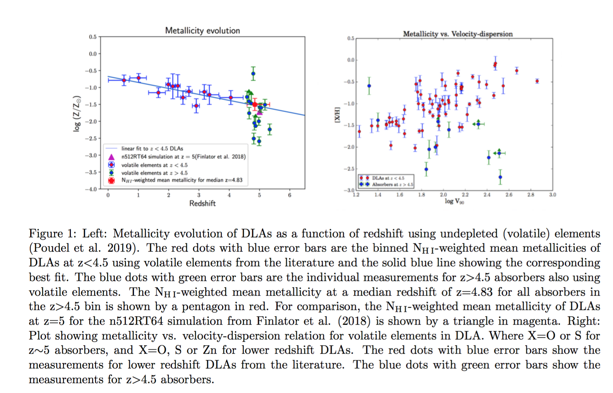

I was born and raised in a remote village (popularly called Ukhubari Tapu) of Syangja district in Nepal,
the mountainous country in south asia. Although not acquainted with any means of modern technology during my school years
(not even with the electricity and motor vehicles), I was very fond of starring at the majestic
view of the night sky as seen from my home town, undimmed by the city lights. I had have a curious mind to know
the secret of the astronomical objects and the distances these objects were probing.
Soon after I got to Kathmandu (the capital city of Nepal) to start my higher education, I discovered
about the science that deals with the study of the Universe was called Astrophysics. I did my Bachelor and Masters degrees in Physics from Nepal,
then got an opportunity to pursue PhD in Physics from University of South Carolina, Columbia, USA.
During my PhD, I worked under the supervision of my advisor Dr. Varsha P. Kulkarni to study the formation and
evolution of galaxies at high-redshift universe using the
quasar absorption line technique. The photons that left these quasars sometime
during the first ~1 billion years after the big bang (~12 billion years back in time)
travel through the intervening galaxies and the features of these galaxies get imprinted
in the spectrum of the background quasars. I'm particularly interested in the
sub-DLAs/DLAs absorbers (early phase of galaxies which dominate the neutral gas mass
density of the universe). To accomplish this, I make use of some of the world's largest
telescopes such as Keck Telescope in Hawaii, Large Binocular Telescope (LBT) in
Arizona, Very Large Telescope (VLT) and Magellan Telescopes in Chile. The picture
shown above (Atacama, Chile), the driest non polar desert in the world, is the home
to the astronomers, where I have visited multiple times to observe quasars (the furthest
known sources in the universe), using the Magellan Telescopes. By analyzing these
data, we can understand how the present
day galaxies like our Milky Way were enriched and evolved through the cosmic ages.
My Research
My research has mainly focussed on galaxy formation and evolution.
I use a wide variety of spectrographs such as MIKE and MagE on
Magellan telescope, ESI and HIRES on Keck telescope, X-Shooter on VLT and PEPSI on LBT.
I observe the background quasars to probe the intervening gas-rich galaxies in both the optical (VIS)
and near infrared (NIR) wavelength regime. To be specific, I study the chemical abundance, dust content and gas-kinematics
of sub-DLA/DLA absorbers at high redshift universe. Following are some highlights of
the research I'm involved in.
Metallicity evolution of sub-DLAs/DLAs at z∼5
Observations of DLAs at 0 < z < 4.5 indicate that their metallicity decreases
at a modest rate of about 0.2 dex per unit redshift
(e.g. Prochaska et al. 2003a; Kulkarni et al. 2005, 2007; Rafelski et al. 2012;
Jorgenson et al. 2013; Som et al. 2013, 2015; Quiret et al. 2016). However,
some studies have reported a sudden drop in DLA metallicity at z > 4.7 which,
if real, may suggest sudden changes in gas enrichment processes
(Rafelski et al. 2012, 2014). This relatively small z > 4.7 sample is based almost
entirely on the elements Si and Fe which show significant depletion on dust grains
in the ISM of the Milky Way (MW) (e.g. Jenkins 2009). Indeed, Si and Fe are observed
widely to be depleted in DLAs as well (e.g. De Cia et al. 2016). Given the
potentially interesting implications of a sudden drop in metallicity at z ∼ 5 and
the conflict such a drop would produce with existing chemical evolution models,
it is especially important to check with a larger sample using undepleted
elements (e.g. S, O). With this goal, I have expanded measurements of
S and/or O in sub-DLAs and DLAs at z > 4.5. My measurements have more than
quadrupled the previously existing sample. The reason my work has been very
important is that the measurements at z > 4.5 are highly challenging because
of the severe blending of metal lines with the dense Lyman-alpha forest,
difficulty in continuum fitting, and the low S/N reached in the spectra of
the high-z quasars. After combining a handful of dust-free metallicity
measurements from the literature with my 10 new measurements at z > 4.5,
I observed the metallicity value to be in excellent agreement with the prediction
inferred from lower redshift DLAs (see Fig. 1 (Left)). This supports the
interpretation that the metallicity evolution is smooth at z ∼ 5, rather
than declining suddenly at z > 4.7. The primary reason my finding differs from
that of previous studies appears to lie in the fact that I am focusing on
elements that do not deplete on to dust grains. Furthermore, these measurements
indicate that the metallicity evolution trends for the DLAs and sub-DLAs may be
similar at this early epoch.
Moreover, a significant fraction of the z∼5 absorbers show evidence of depletion of
elements onto dust grains, e.g. low [Si/O] or [Fe/O]. In a substantial fraction of
absorbers at z > 4.5, the extent of dust depletion, as judged by the
parameter F⋆ (Jenkins 2009), appears to be at least as significant as
(and in some cases stronger than) the typical depletion found in lower-redshift absorbers.
All of these findings are published in Monthly Notices of the Royal Astronomical
Society (MNRAS) recently (e.g. Poudel et al. 2018, 2019).
Gas-kinematics
The gas kinematics of a galaxy can be understood from measuring the velocity
dispersion of its gas. The value of the velocity dispersion may depend on the
inflow or outflow of gases within the galaxy and also on rotation in the disk of the
galaxy which depends on the galaxy mass. If the velocity dispersion depends
primarily on mass, and the role played by gas flows is small, then the velocity
dispersion vs. metallicity relation can suggest a relationship between mass and
metallicity of absorber host galaxies. In lower redshift DLAs and sub-DLAs, a
fairly tight correlation exists between the metallicity and the velocity
dispersion of the gas (e.g. P ́eroux et al. 2003; Ledoux et al. 2006;
Moller et al. 2013; Som et al. 2015). However, this relation is still unknown for
high-z absorbers. My recent study show a somewhat flatter relation at z∼5
(see Fig. 1 (Right)), possibly suggesting that the z∼5 absorbers may be tracing
a different population of galaxies than the lower redshift absorbers
(Poudel et al. 2018, 2019).

Nucleosynthesis and Relative Abundances
The first 1 billion years of the cosmic metal evolution are influenced by the
nucleosynthetic signatures from the early stars.... Measuring abundances during the
z ∼ 5 epoch can constrain the nature of the pristine Population III stars and the
early generations of metal-poor Population II stars. The initial mass function
(IMF) of Population III stars is still a subject of debate. Measurements of
relative abundances such as [Si/O] and [C/O] in chemically young systems can
put a strong constraint on the mass of the progenitor Population III stars.
Combining my sample with measurements from the literature, I examine the relative
abundances in the z ∼ 5 DLAs, and find their [C/O] ratios to be consistent with
those of the very metal-poor (VMP) DLAs (e.g. Cooke et al. 2017). Moreover,
I select few relatively metal poor z ∼ 5 DLAs to compare with the nucleosynthesis
models of massive metal-free stars and run mcmc simulations to estimate the
probability distributions of the masses, explosion energies and mixing widths of
the progenitor stars that might have enriched these galaxies. I estimate that the
probability distributions of the progenitor masses to be centered around
12 M⊙ to 17 M⊙ (Poudel et al. 2019).